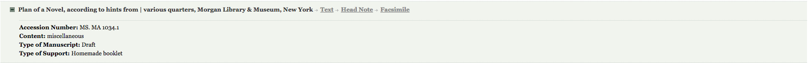
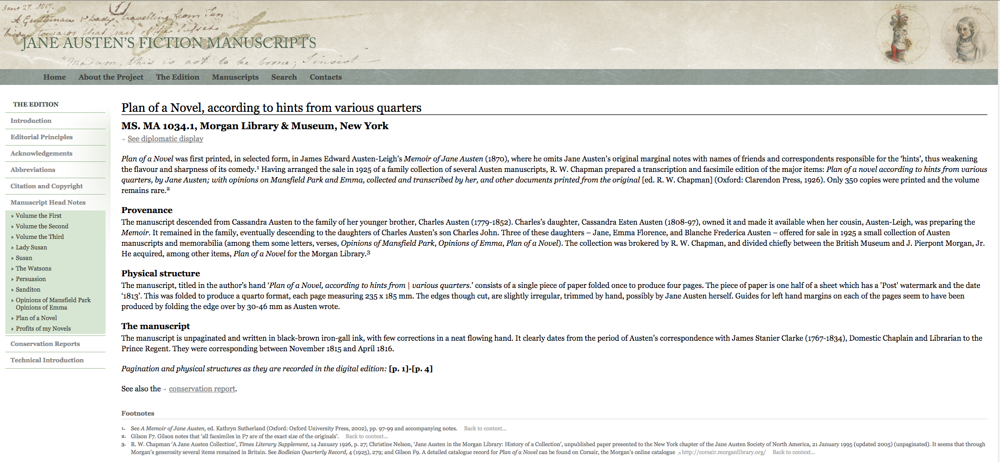
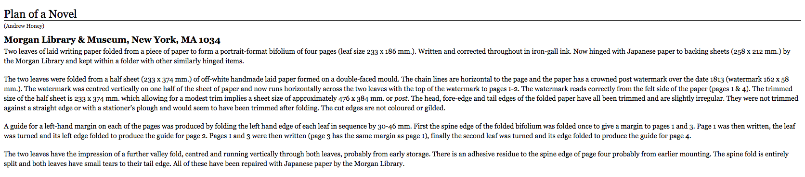
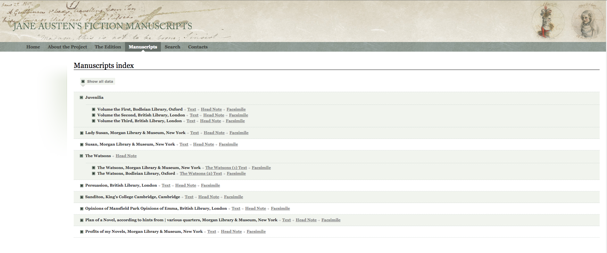
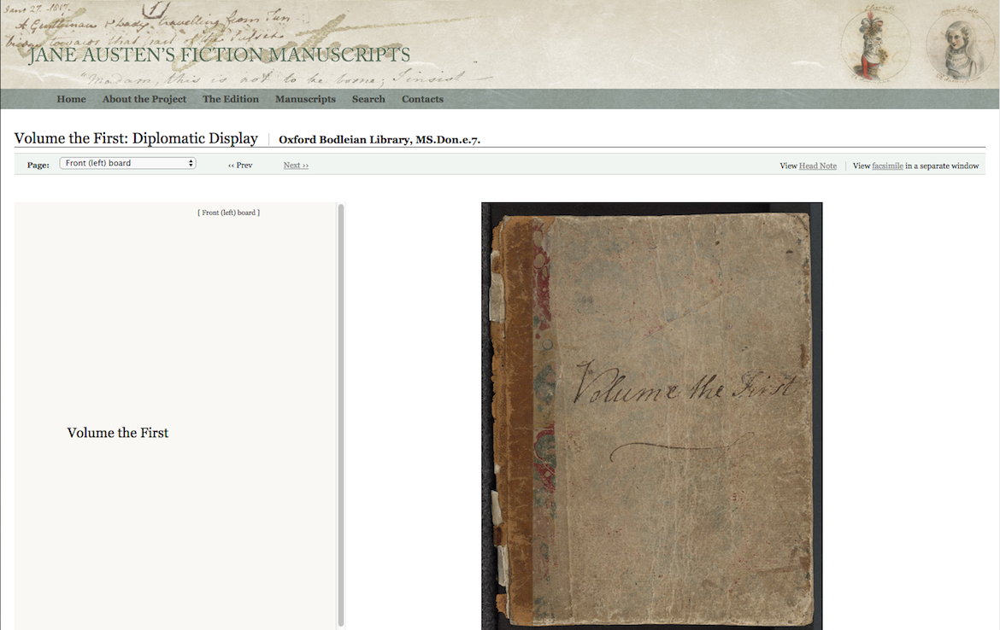
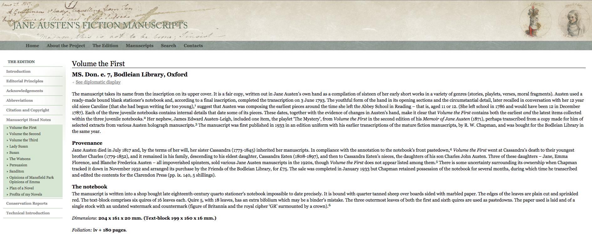
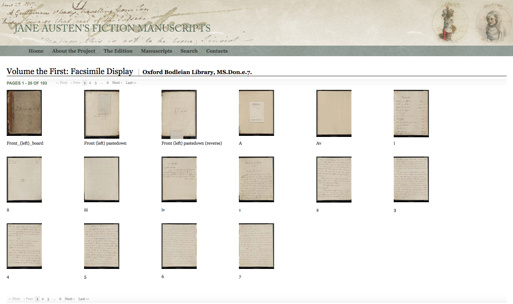
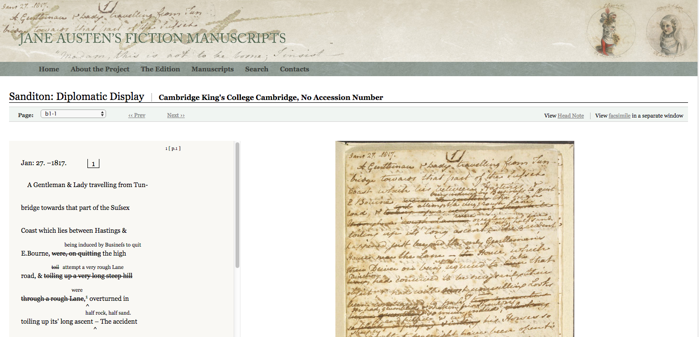
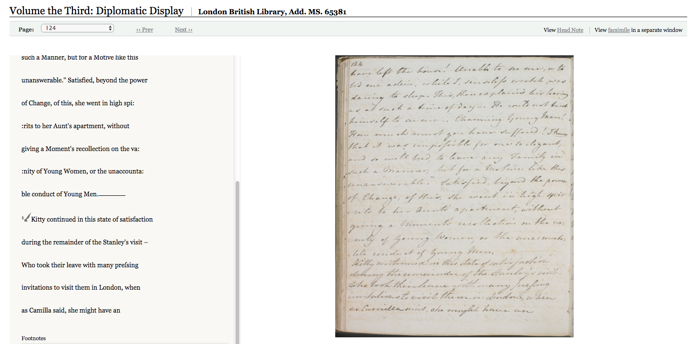

Jane Austen’s Fiction Manuscripts
Table of Contents
Abstract
Jane Austen’s Fiction Manuscripts Digital Edition (JAFM), edited by Kathryn Sutherland, provides high-resolution pages images and diplomatic transcriptions for all of Austen’s surviving fiction manuscripts (totalling approximately 1100 manuscript pages), all unpublished in her lifetime. It assesses the site’s editorial principles, functionality, and contribution to Austen studies, digital scholarship, and textual editing. As a site that offers diplomatic transcriptions not reading texts — what Elena Pierrazo (the Technical Research Associate) has termed ‘Digital Documentary Editions ’— JAFM offers an excellent opportunity to investigate the ways in which the print paradigm for textual editing is being reimagined and reshaped for digital editions.
Introduction
Jane Austen’s Fiction Manuscripts Digital Edition (JAFM) offers digital facsimiles and transcriptions of the approximately 1100 surviving pages of fiction written in Jane Austen’s own hand. The ‘Introduction to the Edition’ notes that the collection offers a virtual reunification of Austen’s manuscripts, most of which were dispersed after her death and subsequently sold to libraries and private collections in the UK and the US. The manuscripts offer a unique glimpse into Austen’s career, for, ‘[u]nlike the famous printed novels, all published in a short span between 1811 and 1818, these manuscripts trace Jane Austen’s development as a writer from childhood to the year of her death; that is, from 1787 (aged 11 or 12) to 1817 (aged 41).’
The Project Director and Principal Investigator of JAFM is Kathryn Sutherland, Professor of Bibliography & Textual Criticism at St. Anne’s College, Oxford University. A leading Austen scholar and textual editor, Sutherland was joined by Technical Director, Dr. Marilyn Deegan, and Technical Research Associate, Dr. Elena Pierazzo (professors at King’s College, London and Université Grenoble Alpes, respectively), as well as a large project team of technical and research associates from the Centre of Computing for the Humanities, King’s College London; and Oxford University. Many private individuals and institutions contributed to the project through the rights to reproduce the page images, and the project was supported by a grant from the Arts and Humanities Research Council’s Resource Enhancement Scheme.
The main features of the edition are:
- Editorial Introduction, including technical introduction;
- High quality full-colour digital scans, taken for this edition, of all extant fiction manuscripts in Austen’s hand;
- Full diplomatic transcriptions of all manuscript texts, produced and marked up using XML TEI, including metadata for each manuscript;
- Detailed descriptions of the physical manuscripts and conservation reports for each.
Scope and Rationale of the Edition
JAFM confines itself to Austen’s fiction manuscripts. While some of these manuscripts have been digitized elsewhere, they exist isolated on various institutional webpages such as the British Library. Often what is reproduced are selections from a manuscript (e.g. The British Library’s version of Austen’s ‘History of England,’ which is contained within a larger manuscript notebook known as ‘Volume the Second.’). All of these manuscripts have been transcribed and printed in modern editions of Austen’s works, but print facsimiles are often expensive or out of print, and no single book contains all of the facsimiles of the fiction manuscripts. The most recent student edition, The Manuscript Works of Jane Austen (Broadview 2012; ed. Linda Bree, Peter Sabor, Janet Todd), provides reading texts of select juvenile pieces from her three manuscript compiliations (‘Volume the First,’ ‘Volume the Second,’ and ‘Volume the Third’), and Lady Susan, The Watsons, and Sanditon, but not the cancelled chapters of Persuasion, which are included in the Broadview’s edition of that novel (again as idealized reading texts). The Cambridge Edition of the Works of Jane Austen includes her manuscript works over three volumes: Juvenilia (2006; ed. Peter Sabor) includes reading texts with insertions and deletions included in footnotes, and a photographic facsimile of History of England, which was illustrated by Cassandra Austen; Persuasion (2006; ed. Janet Todd and Antje Blank) includes a facsimile of the cancelled chapters 10 and 11, and a reading text of the same (278-325); and Later Manuscripts (2008; ed. Janet Todd and Linda Bree), includes reading texts and diplomatic transcriptions for The Watsons and Sanditon, the two later manuscripts that are in draft form. Thus currently no print edition brings together all the manuscript material, and, in most accessible modern editions, facsimiles are not provided and transcriptions are not diplomatic, preventing access to the rich textual history of revisions contained within the manuscripts.
Although not all of Jane Austen’s manuscripts are included (her letters, and some poetry, for example), JAFM fulfills its mandate to reproduce all the surviving fiction manuscripts, and understandably these are the documents that are of most relevance to scholars, being directly related to her fictional project and extremely difficult to access in by any other means, including in-person examination, as many of the documents are fragile. By supplying accurate diplomatic transcriptions of all manuscript documents, JAFM provides scholars, students and the general public with the ability to delve into Austen’s processes of fictional composition. JAFM offers unprecedented access to high-quality digital surrogates and transcriptions of Austen’s fiction manuscripts, opening up a range of opportunities for student engagement with issues ranging from Austen’s material practices of writing to her development as a writer, from the nature of literary archives to the principles of scholarly digital editing (see Levy, ‘Teaching’). An examination of JAFM can also engage students in questions about what is gained and lost in terms of the representation of original documents through the process of digital remediation.
JAFM offers a clear statement of its aims:
There is also documentation of the project’s methods of scanning. The encoding model is also provided in the ‘Technical Introduction.’The focus of the present digital edition is three-fold: the virtual reunification of this significant collection of fiction manuscripts by means of high-quality digital photographic images; the linking of these images to fully encoded and searchable diplomatic transcriptions; and the creation of as complete a record as possible of the conservation history and current physical state of these frail objects.
This SDE contributes to wide public and scholarly interest in Jane Austen, supporting several forms of research inquiry. The detailed information provided about the material support of the handwritten documents — many are very small handmade booklets prepared by Austen herself — offers insight into her working methods. The provision of transcriptions of all of Austen’s revisions — her cancellations, additions, some of which are very significant, as in the case of the final chapters of Persuasion — allow an unparalleled opportunity to witness the process of fictional creation. JAFM supports inquiry into the nature of her satire, the use of self-censorship, and the struggle to conclude her narratives, and allows us to see continuities as well as shifts in her practices and preoccupations across her career. By providing digital access to Austen’s fiction manuscripts, JAFM also ensures the conservation of the physical manuscripts themselves, as scholars will, in most cases, no longer need to consult the originals.
Content of the Edition
Selection and Organization of Documents

Additional information about the physical manuscript is displayed in two other sources: in Head Notes and Conservation Reports. The ‘Head Note’ (see Fig. 2), linked through the Manuscripts index, offers information about
the structure and contents of each manuscript, according to the following criteria: a summary general description; an account of the provenance and history of its ownership; a physical description of the manuscript as a document or object and a technical analysis or collation of its structures; a description of the manuscript’s contents.


Editorial Principles and Aims
Each document is transcribed according to clearly articulated ‘Editorial Principles.’ The transcriptions aim
to be faithful to Austen’s spelling, paragraphing, and punctuation; to her abbreviations and other distinctive features of her writing hand: her long ‘s’ (∫) and ampersand (&) are preserved, as is her use of underlining. Line and page breaks are carefully followed; all signs of revision and correction are transcribed as they occur in the body of the text.
No reading/ideal texts are represented. It is not known whether XSLT transformations could have been used to render a reading text from the underlying XML markup, however, given the layers of emendation to some of the manuscripts (particularly The Watsons, Persuasion, and Sanditon) this may have presented challenges. In any event, as discussed above, all printed versions of the manuscript writing include reading texts, usually exclusively. The editors of JAFM thus supplement the existing scholarly record by emphasizing the physical manuscripts and, with diplomatic transcriptions alone, the instantiations of the texts they represent.
Traditional textual criticism of the manuscripts, provided in most print editions, is absent from JAFM. According to the editors, JAFM plans to release a print edition of the digital edition that will be ‘enhanced by richer annotation, discursive essays on the genesis and composition of the manuscript works, and consideration of their relationship to Austen’s printed fiction.’ (JAFM, Output) However, what a print edition will gain in terms of editorial commentary and analysis, it will almost certainly lose in terms of functionality. The facsimile of the cancelled Persuasion chapters, included in the printed Cambridge Edition, offers a case in point: reproduced in grayscale, the manuscript pages are illegible in places due to fading and overwriting. These problems are overcome in high-resolution digital reproductions, which can even, in some cases, improve upon the original (O’Driscoll and Pierazzo, 5). Each manuscript is encoded within a separate XML file using JAFM’s encoding guidelines; and each file is transformed into the diplomatic transcriptions using an XLST style sheet.
Presentation




High quality digital images are central to the edition. The editors are mindful, however, that digital images are always imperfect remediations of the original. Thus,
The material focus of the edition informs the decision to represent, via diplomatic transcription, all lexical features of the text, and likely also explains the decision to allow diplomatic transcriptions to be viewed only beside facsimile image (not independently). Given what we are learning about screen reading, having the opportunity to download — and print — complete transcripts would be very helpful, particularly given that many of the texts are long, and clicking through each page takes some time. Facsimile images can be viewed independently of the transcriptions, allowing them to be magnified for better examination.great care has been taken to limit certain kinds of enhancement (cropping, scale distortion, erasure of blemishes, flattening) all too frequent (and all too ignored) in the substitution of digital facsimile for original. At the same time, other enhancements are positively embraced: notably the capacity to magnify difficult words or passages and to focus upon manuscript’s graphic values. As a result, an edition incorporating facsimile images makes greater interpretative demands on compilers and users: fidelity to an original is always under critical scrutiny.


JAFM has not been integrated into other systems, such as NINES, which ‘aims to gather the best scholarly resources in the field and make them fully searchable and interoperable.’ (NINES, About) Nor does the edition have any social media links. The information pages are somewhat optimized for mobile, but the manuscript pages remain in desktop orientation (i.e. not optimized).
Conclusion
Jane Austen’s Fiction Manuscripts may be classified as a Scholarly Digital Edition (SDE), as defined by the IDE and Sahle 2016. It provides a clear editorial rationale for its decisions, and follows through with accuracy and thoroughness. Through her work on JAFM, Elena Pierazzo has developed an account of the nature and importance of what she terms ‘Digital Documentary Editions.’ Pierazzo defines these as ‘the recording of as many features of the original document as are considered meaningful by the editors, displayed in all the ways the editors consider useful for the readers, including all the tools necessary to achieve such a purpose.’ (Pierazzo 2011) JAFM satisfies these conditions, with its commitment to bring Austen’s manuscripts, and with it her words and practices, alive to both the expert and general reader.
Through Pierazzo’s and Sutherland’s scholarship in JAFM and other publications, we have an example of how the development of SDEs can impact editorial theory and digital scholarship. The editorial principles articulate the special features of JAFM and suggest its wider contribution:
A particular feature of this edition is the evidence provided for the relationship between the manuscripts as linguistic structures (as words, phrases, punctuation) and as the physical documents that support those structures (quires of paper, folded into homemade booklets or bought already bound into blank notebooks). It is an edition of a series of objects as well as of their texts. This more than any function of the digital medium sets it apart from previous Austen manuscript editions, changing its relationship to its materials. Information (under ‘the notebook’ or ‘physical structure’) in the Head Note attached to each manuscript is offered as an aid to the reconstruction of the physical objects and to strengthen our view of their importance to the texts inscribed upon them.
According to Patrick Sahle, ‘[a] scholarly edition is the critical representation of historic documents.’ (Sahle 2016) In JAFM, this critical element is provided through the detailed documentation of the materiality of Austen’s manuscripts. Ranging from the handmade booklets in which she drafted her fiction to the store-bought notebooks into which she copied her juvenile writing, JAFM’s editorial commentary and digital editing protocols enable users to think about Austen’s writing processes in uniquely valuable ways.
In a recent article, Laura Estill and I have argued that the digital remediation of women’s manuscripts is of great importance to ‘the ongoing recovery and theorization of women's engagement with literary culture.’ At the same time we believe that attention to manuscripts can challenge ‘the traditional distinctions and hierarchies between script and print, amateur and professional, non-literary and literary.’ (Estill and Levy 2016) Austen’s manuscripts are a case in point, as they reveal a writer who was at once a playful amateur and a working professional writer, who moved between different modes of writing, for different audiences, throughout her career, dissolving many accepted categories within literary history.
JAFM could benefit from updates and enhancements, some of them suggested in this review. Supplementing the edition with additional images and videos of scholars and curators handling the manuscripts (some of which have already been made with Sutherland’s involvement, see references below) would help to inform readers about the scale and construction of Austen’s drafting surfaces. If it is possible at some point in the future to integrate the contextual editorial work as promised for the print edition, JAFM would combine the best qualities of print and digital editions. Access to the XML markup would also serve the interests of using the edition as a tool for teaching the encoding of complex and dynamic manuscript objects, and would empower users to utilize the markup language to work with different textual outputs.
These suggestions are made with full knowledge of the expense and resources needed to keep the site functioning in a steady state. One of the challenges digital editions impose is the need for ongoing maintenance, improvements are often beyond consideration. The print paradigm which has supported editorial scholarly output must be rethought in order to sustain existing scholarly digital resources and to support their ongoing development.
Bibliography
- Austen, Jane. Juvenilia: The Cambridge Edition of the Works of Jane Austen. Ed. Peter Sabor. Cambridge: Cambridge University Press, 2006. Print.
- Austen, Jane. Later Manuscripts: The Cambridge Edition of the Works of Jane Austen. Ed. Janet Todd and Linda Bree. Cambridge: Cambridge University Press, 2008. Print.
- Austen, Jane. The Manuscript Works of Jane Austen. Ed. Linda Bree, Peter Sabor, Janet Todd. Peterborough, Ontario: Broadview 2012. Print.
- Austen, Jane. Persuasion: The Cambridge Edition of the Works of Jane Austen. Ed. Janet Todd and Antje Blank. Cambridge: Cambridge University Press, 2006. Print.
- Driscoll, Matthew James and Elena Pierazzo, ‘‘Introduction: Old Wine in New Bottles?’ in Digital Scholarly Editing. Theory, Practice and Future Perspectives, ed. Matthew Driscoll and Elena Pierazzo, Cambridge: Open Book Publishers, 2016; online PDF at http://www.openbookpublishers.com//download/book/527.
- Estill, Laura, and Michelle Levy. ‘Evaluating digital remediations of women's manuscripts.’ Digital Studies / Le champ numérique, 2015. Web. https://www.digitalstudies.org/ojs/index.php/digital_studies/article/view/360/438.
- JAFM, Introduction. http://www.janeausten.ac.uk/edition/intro.html.
- JAFM, Headnotes. http://www.janeausten.ac.uk/edition/ms/headnotes.html.
- JAFM, Editorial Principles. http://www.janeausten.ac.uk/edition/editorial.html.
- JAFM, Output and Dissemination. http://www.janeausten.ac.uk/about/output.html.
- Levy, Michelle. ‘Teaching Jane Austen’s (Digitized) Manuscripts’ in Teaching Austen. Romantic Circles Pedagogy Commons. Ed. Devoney Looser and Emily Friedman. April 2015.http://www.rc.umd.edu/pedagogies/commons/austen/pedagogies.commons.2015.levy.html.
- NINES, About. http://www.nines.org/about/.
- Pierazzo, Elena. ‘A Rationale of Digital Documentary Editions.’ Literary and Linguistic Computing, (2011) 26.4: 463–477.
- Sahle, Patrick, ‘What is a scholarly digital edition (SDE)?’ in Digital Scholarly Editing. Theory, Practice and Future Perspectives, ed. Matthew James Driscoll and Elena Pierazzo. Cambridge: Open Book Publishers, 2016; online PDF at http://www.openbookpublishers.com//download/book/527.
- Sutherland, Kathryn. ‘Jane Austen. The Watsons.’ Online Video Clip. Treasures of the Bodleian. The Bodleian Libraries, 2011. Web.
- Sutherland, Kathryn. ‘Jane Austen’s Manuscripts‘ Online Video Clip. Discovering Literature: Romantics and Victorians. The British Library, n.d. Web.
- Sutherland, Kathryn. Jane Austen’s Textual Lives: from Aeschylus to Bollywood. Oxford: Oxford UP 2005. Print.
- Sutherland, Kathryn. Jane Austen’s Fiction Manuscripts: A Digital Edition. University of Oxford and King’s College London. 31 July 2012. Web. http://web.archive.org/web/20161130191138/http://janeausten.ac.uk/index.html.
- Sutherland, Kathryn. and Elena Pierazzo, ‘The Author’s Hand: From Page to Screen.’ Collaborative Research in the Digital Humanities. Ed. Marilyn Deegan and Willard McCarty. Farnham, Surrey: Ashgate, 2012. Print.
@article{janeausten,
author = {Levy, Michelle},
title = {Jane Austen’s Fiction Manuscripts},
journal = {RIDE – A review journal for digital editions and resources},
number = {5},
year = {2017},
doi = {10.18716/ride.a.5.1},
url = {https://doi.org/10.18716/ride.a.5.1},
}TY - JOUR
AU - Levy, Michelle
TI - Jane Austen’s Fiction Manuscripts
T2 - RIDE – A review journal for digital editions and resources
IS - 5
PY - 2017
DA - 2017/02
DO - 10.18716/ride.a.5.1
UR - https://doi.org/10.18716/ride.a.5.1
PB - Institut für Dokumentologie und Editorik e.V.
LA - en
ER - Levy, M. (2017). Jane Austen’s Fiction Manuscripts. RIDE – A review journal for digital editions and resources, (5). https://doi.org/10.18716/ride.a.5.1Levy, Michelle. "Jane Austen’s Fiction Manuscripts." RIDE – A review journal for digital editions and resources, no. 5, 2017. https://doi.org/10.18716/ride.a.5.1.Levy, Michelle. "Jane Austen’s Fiction Manuscripts." RIDE – A review journal for digital editions and resources, no. 5 (2017). https://doi.org/10.18716/ride.a.5.1.